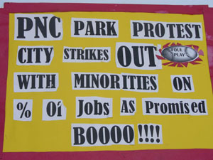

Wide Wide World of Sweatshops: From Hockey to Slots in the Steel City – Feb 07
Submitted on Sat, 01/20/2007 - 9:05pm
Pittsburgh is on the verge of three large building projects that exacerbate some of the most serious problems of the labor movement in our region. A new hockey arena for the Pittsburgh Penguins is being pushed through by all of the usual political players with great haste, much the way the Steelers’ and the Pirates’ got their stadium. John Chalovich of the IBEW/Joint Council of the Building Trades/Western PA Builders Guild actually chairs the board of the Sports and Exhibition Authority. The SEA, our public authority, is three steps ahead of the deal, borrowing money from the state and working to change zoning laws months before the team is committed to a deal. In December, they even paid for a study to justify a Project Labor Agreement and entered into the agreement with the same motion.
A huge pork barrel project to dig a subway tunnel under the Allegheny River is being handled in the same way, for people who “cannot take a bus or walk/roll across the Roberto Clemente Bridge” to attend a ball game. This huge pork barrel project is going thru at a moment when 400 drivers are being laid off, huge cuts in bus routes, and tremendous fair increases are on the horizon. The money for construction is in hand… the money to provide ongoing services is not. The Executive Director of our Port Authority Transit just jumped ship and took the job as the Executive Director of the Builders Guild.
The other big project about to begin is a casino. PA just legalized slots and on December 20 the state awarded the slots license for the Pittsburgh parlor to a billionaire from Detroit named Don Barden. All of the local politicians and sports teams, labor unions, EVERYONE was lobbying for their favorite casino proposal. The local favorite was an outfit the promised to build the Penguins a new hockey arena with slots money. Don Bardon and his proposal to build a casino on the North Shore, next to PNC Park and Heinz Field was NOT the local favorite. This casino will be the largest private sector development any of us can remember. Don Barden is NOT connected to our local political scene and he is NOT obligated to pay the prevailing wage, much less sign a Project Labor Agreement with his private building dollars.
Basic questions about how the Building Trades do business and politics will be especially apparent as the construction of the hockey arena and the casino happen similtaneously. Not only unions, but also community groups and civil rights groups, are ready to talk about the jobs that will be created - both the construction and the service jobs that come after. Don Barden is Black and this casino will be, by far, the largest minority owned business in the region.
The closing of the steel mills and job loss amongst the thousands of Black workers there drew attention to the nearly all-white make up of the Building Trades. The mills along the river were closing, downtown Pittsburgh was being erected, as was Three Rivers Stadium. While the USS (now USX) building was going the NAACP and other Civil Rights organizations marched around it and Building Trades workers hurled rivets from the top floors onto the marchers below. In 1973 the first Black Operating Engineer stood in front of a bulldozer at the Three Rivers Stadium construction site to demand more jobs in the Building Trades unions for Black workers.
By all accounts the Nate Smith, the Operating Engineer, who stood in front of the bulldozer, was a tough negotiator – shortly thereafter, 90 apprenticeship slots were opened up for minorities and “Operation Dig” became the model for integrating Building Trades unions across the United States. Nate appeared on the cover of Jet Magazine standing in front of a drawing board with construction engineers and the Building Trades pie cards at his side. With the integration problem behind them and the steel mills shut down, the Building Trades assumed control of the Central Labor Council and the local Democratic Party, control they maintain to this day.
The coming years have been an exercise in maintaining this control while dealing with the failure of the Operation Dig. There was a Federal Consent Decree to monitor compliance with the plan that came and went. Then there was a piece of legislation called Pittsburgh Works that meant to mandate the number of minority workers on local construction sites. It is still unmonitored today. The issue has been the undoing of many a well intentioned Black politician.
Layers of complication have been added by the efforts of the Building Trades to resist monitoring the number of minority union workers while simultaneously holding down the state prevailing wage and nailing down agreements to assure “union contractors” can bid exclusively on projects involving any public money.
Here in Pittsburgh we often here about what the unions are doing to create construction jobs. Endlessly, groups like the Joint Council of Building Trades, the Builders Guild, and Central Labor Council are lobbying for state and federal money to pay for construction projects. It does not matter what the construction project is. The big-ticket items are new sports stadiums, convention centers, maglev (high speed rail to the airport still waiting on federal pork), underwater rail connections (pork is in the pipeline).
The labor unions are also big advocates for private tax increment financing (TIFs) and tax abatements given to corporations to build new buildings. Very recently PNC Bank was awarded another TIF, this one for 50 million, to build another sky scrapper downtown. The Chamber of Commerce, the Joint Council of the Building Trades, the Central Labor Council, and SEIU all lined up in front of City Council to support this TIF.
Here are some things we need to know to understand what is going on here:
Prevailing Wage and the disinterest in “organizing.” The Prevailing Wage is the wage mandated by the government on all construction jobs that they pay for some part of. Whether the workers are union or not… the law applies in the same way… all bosses are legally obligated to pay the Prevailing Wage on these jobs. The unions no longer seek work where the Prevailing Wage is not legally mandated. The Prevailing Wage is so much higher than the market rate and Building Trades unions do not try to organize or bargain on work sites where the wage is not legally mandated. The Prevailing Wage law in the state has been challenged in multiple ways and remains in legal limbo dependant of judges nominated by Democratic governors. The Building Trades are simply not interested in the 80% of construction work that is not publicly funded or the 80% of construction workers on those jobs. Some of the work is done reputable way (considering that a boss is a boss) where the boss pays insurance and unemployment. All over Pittsburgh you can talk to people working on really unsafe under the table jobsites… many of the workers are Russian and Hispanic immigrants. Project Labor and Labor Stabilization Agreements. The fact that the union is not interested in non-Prevailing Wage mandated jobs means that the only way they get work for their members is by tapping into State and Federal Projects. The formal network of unions and “union contractors” is called the Builders Guild of Western PA. The unions try to make sure that contractors associated with the Builders Guild get contracts by mobilizing politically for Project Labor Agreements and Labor Stabilization Agreements. They go for these agreements everywhere government money can be found… from municiple governments to schools to public authorities like transit.
There is a long list of justifications for these agreements:
<!--[if !supportLists]-->· <!--[endif]-->Our workers the most qualified and safe… they’ve got through our apprenticeship program.
<!--[if !supportLists]-->· <!--[endif]-->We have the best Project Managers… who budget and schedule every single thing.
<!--[if !supportLists]-->· <!--[endif]-->The unions all have different rules… through these agreements all the different unions on site can work together.
<!--[if !supportLists]-->· <!--[endif]-->Cut the crap… we lobbied for the public money/we are going to build it. That’s why our union does politics. Look at Steelers’ owner Art Rooney on TV, owner Pirates’ owner Kevin McClatchy on ESPN during the All Star Game… they say we build the most beautiful buildings on time and on budget.
The Builders Guild and seniority. The Builders Guild is also involved in covering up the lack of minorities in the Building Trades. The issue is so serious, and there is so much trust between the Builders Guild and the Building Trades, that the unions have given the contractors the right to pick what workers they want on each job. No Bullshit. And it is the Builders Guild that says it will report the number of minority workers on jobs to the city. These numbers are not being reported as the Builders Guild has promised.
Apprentice Slots… the only way in. The Unions’ apprenticeship programs are the BEST training available and the ONLY way to become a union member and a TRUE craftsperson… People get jobs in the Building Trades by going through their Apprenticeship Programs.
Nate Smith is a very old man now with a failing memory. A project called Resonance III, associated with the Legacy of Nate Smith, tries to represent the minorities by negotiating apprentice slots as big projects come and go. Nate Smith traveled to many public schools, talking about his struggle and opportunities for minority students in the construction trades today in a way lifted up some of the least important details and skimmed over the problem of racism in the Building Trades. The students were wowed by Nate’s story of union thugs with guns and suit cases of money. The students were wowed by Nate’s story of being one of the first people in the area with a car phone and always being focuses on “the business” and “getting the deal.” The students and the school district were told over and over again that there were plenty of opportunities in the trades for Black Pittsburgh Public School students.
As this was going on, the Pittsburgh Public Schools washed its hands of adult vocational education and shut down Connley Technical Institute. Members of the Pittsburgh Anti Sweatshop Community Alliance challenged a proposed PLA at the School Board and it was never actually brought to a vote once we demanded the numbers of minorities that the Builders Guild is supposed to be reporting. Latter the magnet school for high school students interested in vocational Education, South Hills Tech, was shut down. I substitute taught there in the final months, the students and the staff and felt and behaved like they were in the mists of a plant closing. The technical education programs at Community College of Allegheny County have since been gutted.
In 2004 Renaissance III 2000 Inc. received a $200,000 grant from the Allegheny County Department of Economic Development.
Many people had hoped that the Coalition of Black Trade Unionists would be active dealing with this issue. I was at a local CBTU meeting it had 4 or 5 years ago. People were angry and talking about marching into to one of these building sites and shutting it down. To my knowledge, it has not met since. CBTU is chaired here in Pittsburgh by Dewitt Walton of USWA. Mr Walton testified at the PA Gaming Control Board, as a Hill District resident, in favor of the application that would have linked the slots license with full funding for the new arena in Pittsburgh’s Hill District.
The Building Trades and all the other unions… “Card Check.” The Building Trades Unions mobilize more than just their members… they organize the entire labor movement… a whole list of unions is in line to get new members through Card Check Agreements that the Building Trades help them to negotiate during the political process. These card check agreements carve up new facilities into multiple unconnected bargaining units and there is never a thought of lining up contract expiration dates. Imagine what we would have if there were one contract at Heinz Field, PNC Park and the Convention Center… or lined up expiration dates, or any willingness to develop a culture of on the job solidarity across these bargaining units.
The situation gets worse because some workers and some jobs are systematically left out of the card check arrangements. The workers who clean up PNC Park, for example, during the process of carving up bargaining units at would be PNC Park the union and the ownership of the Pirates were able to agree that these folks would not be worth representing. To this day the workers who clean up PNC Park are temps brought in through Man Power. The same is true at ballparks across the country. Camden Yards comes to mind, where the workers have organized independently of the AFL-CIO into the United Workers Association.
I was working at the new David L Laurence Convention Center when it opened and UNITE HERE Local 57 was getting cards signed and negotiating a contract with Levy Restaurants. We were told that card signing was a mandatory part of employment at a meeting with the union steward and the boss. At big events union members supervised temporary workers, sometimes the ratio was 10 to 1. All around us were workers from 5 or 6 other unions… there was no attempt at building a union culture at all, much less reaching out to the Levy Restaurant/UNITE HERE workers across the river at PNC Park. One symptom of the Card Check agreements is that the union has political reasons to nail down the contract is quickly and quietly as possible. Theses jobs are terrible, in terms of working conditions and rates of pay. When we challenge the quality of jobs that our publicly funded projects have created, politicians cannot believe that anyone would speak up after the union signs a contract. Workers in the service jobs at the Convention Center, and the ballparks are easily held, more than half, by minorities.
The Problem of Hockey and Slots. With at least 3 very high profile building projects being negotiated in and around downtown Pittsburgh and the labor movement neck deep in negotiating both building contracts and “card check” agreements for service and maintenance employees, now is an important time assess the labor movement’s role in this communities “development.”
Don Barden is not going to want a Project Labor Agreement and he is not legally obligated to have one. Can he build in Pittsburgh without one? What will his commitment be to minority hiring practices on his job site? With a hockey arena and a casino going up at the same time… safety, quality… everything can be compared. This is an important time for Civil Rights organizations to ask the tough questions. The current practices of the Building Trades are a recipe for long term systemic racism here in the City of Pittsburgh… here is the recap:
<!--[if !supportLists]-->· <!--[endif]-->The Building Trades are constantly lobbying for jobs… but the only jobs they get are job continuity for their current membership.
<!--[if !supportLists]-->· <!--[endif]-->The current membership of the Building Trades is not diverse and the regions high paying construction jobs are almost exclusively held by white men.
<!--[if !supportLists]-->· <!--[endif]-->The constructions workers in the region who most need a union are working on unsafe construction sites that the Building Trades have no interest in organizing.
<!--[if !supportLists]-->· <!--[endif]-->Apprenticeship slots set aside for minority candidates are the only thing that the Building Trades have to offer under their current system, but that won’t solve the problem. It ignores the workers who are already working in the industry and workers who go through the apprenticeship program have to be chosen by the contractors to get work at the completion … they would have to do “affirmative action” on the seniority lists BUT they’ve given up control of the seniority list to hide the lack of minorities.
The solution is not clear. We can demand honesty… staring with the numbers of minority workers in each union… moving onto conditions on the non union work sites… and then demand justice. This is the oldest problem under the sun of the labor movement and we’re going to have to deal with it for Labor to represent our community. This old problem is about to get some new attention as Don Barden negotiates his building contracts and the community persists in its questioning about employment opportunities with the casino and the new arena.
What does this all have to do with sweatshops? To start with, the anti sweatshop activists in Pittsburgh are also Civil Rights Activists and we are going to keep the issues connected when we meet with the Sports and Exhibition Authority and city officials. To learn more about how the building trades are connected to sweatshops… read next months WIDE WIDE WORD OF SWEATSHOPS in the Industrial Worker.